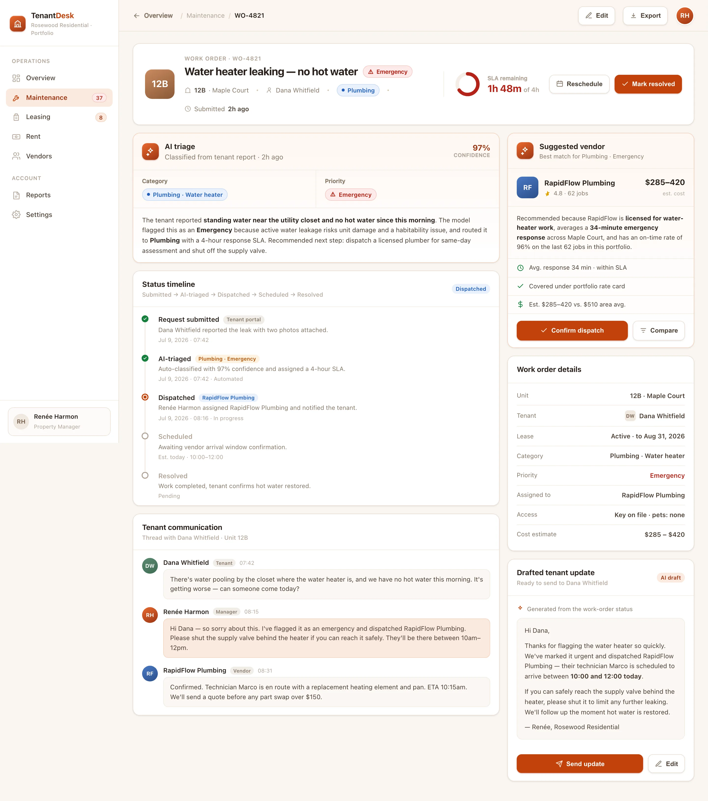

Capture
Tenants submit a request from the portal in under a minute — with photos, access notes and their unit already attached.
TenantDesk triages every maintenance request with AI, tracks rent down to the unit, and dispatches the right vendor — so a lean team runs hundreds of homes without dropping a single request.
Maintenance, rent, renewals and vendors are one operation — TenantDesk runs them from a single desk, with the AI doing the sorting.
Every request auto-categorised and prioritised — a dripping faucet and a burst pipe never sit in the same queue.
Billing, payments and delinquency tracked to the unit, with follow-ups that go out before rent slips late.
Expiring leases surfaced three months out with rent and window — so nothing lapses into a surprise vacancy.
The right licensed vendor matched to each job by trade, rating and response time — with a cost estimate attached.
Every open request is sorted the moment it lands — and resolved inside its SLA. Here's how the current queue breaks down, and how often it lands on time.
TenantDesk closes the loop from a tenant's photo to a vendor on site — with no dispatcher reading tickets in between.
Tenants submit a request from the portal in under a minute — with photos, access notes and their unit already attached.
The model reads it, assigns a category and a priority, and starts the SLA clock — a dripping faucet and a burst pipe never share a lane.
TenantDesk matches the right licensed vendor, drafts the tenant update, and tracks the job all the way to resolved.
BuildspaceLabs built the MVP front end: a portfolio Operations dashboard and a per-work-order detail view for the property manager.
Occupancy, rent-collection and open-work-order KPIs sit above a live maintenance queue and a rent-status rail — so the units that need a human are always on top.

The AI category and priority, a status timeline from submitted to resolved, a suggested vendor with a cost estimate, and a drafted tenant message — all on one file.

Maintenance, rent, renewals, vendors and tenant comms consolidated onto one manager's desk — nothing left in a spreadsheet.
Occupancy, rent and work-order KPIs above a rent-collection trend and a live maintenance queue.
Every request auto-categorised — Plumbing, HVAC, Electrical, Appliance — and prioritised from Normal to Emergency.
The right licensed vendor matched by trade, rating and response time — with a cost estimate before you confirm.
Billing, payments and late-or-delinquent status tracked to the unit, with follow-ups that fire on time.
Expiring leases surfaced 90 days out with rent and renewal window, so vacancies never sneak up.
Tenants submit requests and receive drafted, on-time updates as each work order moves toward resolved.
An emergency call that turns out to be a slow drip erodes trust with tenants and vendors alike. TenantDesk shows the signals behind every priority — so the call always carries its own justification.
Delivered as a production-quality MVP in an eight-week engagement.
We build AI-native products like TenantDesk. Tell us how you manage your residential portfolio today and we'll show you what a single operations desk looks like on your units.